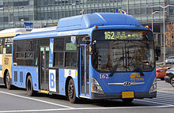
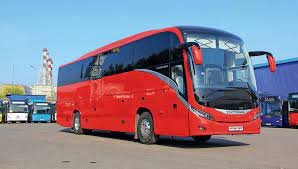

Сеу́л (кор 서울 [sʰʌ.ul], Соуль — букв.: «столица») — столица и крупнейший город Республики Корея. Образует единственный в стране город особого подчинения, разделённый на 25 самоуправляемых районов. Официальное название города — Город особого подчинения Сеул (кор 서울특별시 Соуль-тхыкпёльси).
Главный политический, экономический и культурный центр Республики Корея. Один из ведущих финансовых центров Восточной Азии.
Слово Соуль происходит от древнекорейского соболь или сораболь («столица») периода Силла. Тогда это слово относили к городу Кёнджу, бывшей столице Силла. В ханче кён (京) означает «столица»; этот слог встречается, например, в официальном названии административной единицы на территории Сеула в годы японского колониального правления (Кёнсон/Кэйдзё) и в названиях железных и автомобильных дорог Кёнбусон, 경부선 — железнодорожная линия Сеул-Пусан; Кёнъин косокторо, 경인고속도로 — скоростная автодорога Сеул-Инчхон
В отличие от большинства корейских географических названий, слово «Сеул» не имеет аналога на ханче, и по-китайски город называют его прежним именем (漢城/汉城, китайское чтение — Ханьчэн, корейское — Хансон; значение — «крепость на реке Ханган», но при желании можно трактовать и как «китайская крепость», «крепость ханьцев»). В январе 2005 года правительство города запросило изменение китайского названия города на 首爾/首尔 (Shǒuěr, Шоу-эр), что является приблизительным воспроизведением корейского произношения в китайском языке (в самом корейском, однако, 首爾 читается 수이 , Су-и). При этом 首 (шоу) значит и «первый», и «столица». Китайцы приняли это название. Это изменение касается только носителей китайского языка и не оказывает влияние на корейское название города
Первое название города — Виресон, он был столицей государства Пэкче, начиная с 370 года до н. э. Во времена Корё был известен как Хансон (漢城, «крепость на берегу реки Ханган»). Во времена династии Чосон, начавшейся в 1394 году, был столицей государства и назывался Ханьян (漢陽)). В годы японского колониального правления на территории города располагалась административная единица Кёнсон (яп. 京城, Кэйдзё), название Сеул было окончательно утверждено в независимой Корее в 1946 году.
Сеул расположен на северо-западе Республики Корея, на равнинной местности, на берегах судоходной реки Ханган.
Климат муссонный. Сеул находится на одной широте с югом Турции (Анталья, Аланья), Грецией, Испанией и другими тёплыми странами, тем не менее в городе отмечается устойчивая, хотя и непродолжительная мягкая зима. Средний температурный минимум января — −6,8 °C. Лето жаркое (средняя температура августа — +25,5 °C) и очень влажное. Однако сильная жара в городе бывает редко, и температура крайне редко достигает 35 °C.
| Год | Количество жителей |
|---|---|
| 1428 | 103 328 |
| 1660 | 200 000 |
| 1881 | 199 100 |
| 1890 | 192 900 |
| 1899 | 211 200 |
| 1902 | 196 600 |
| 1906 | 230 900 |
| 1910 | 278 958 |
| 1915 | 241 085 | 1920 | 250 208 |
| 1925 | 336 349 |
Сеульский метрополитен по объёмам пассажироперевозок занимает одно из первых мест в Азии. Девять линий метро имеют номера от 1 до 9, есть линия Чунъансон (кор. 중앙선), являющаяся железной дорогой, но имеющая общие станции пересадок с линиями метрополитена, и линия Пундансон (кор. 분당선), тоже относящаяся скорее к железной дороге, нежели к линии метрополитена.
Транспортный бум в Сеуле берёт начало в эпоху Корейской империи, когда были проложены первые автодороги и первая железная дорога до Синыйджу. С тех пор транспортная система города сильно разрослась, сделав его одним из крупнейших транспортных узлов Азии. В городе проложен метрополитен с девятью линиями, действует около 200 автобусных маршрутов и шесть больших автострад (хайвеев), соединяющих районы города и пригороды. Сеул соединяется с другими городами страны посредством Корейской скоростной железной дороги, являющейся одной из самых быстрых в мире.
Согласно действующему генеральному плану Сеула до 2030 года, город имеет три главных центра: исторический центр города имеет границы Ханяна времён династии Чосон (проспект Чонно и площадь Кванхвамун), деловой центр Каннам и финансовый Ёндынпхо-Ёыйдо[13]. Там соседствуют древние дворцы, штаб-квартиры корпораций, современные офисные здания и гостиницы. Эта часть города находится в долине Чхонгечхон (청계천). К северу от делового центра находится гора Пукхансан, а к югу — небольшая гора Намсан.
Сеул (на 2015 год) поддерживает отношения, установленные в период с 1997 по 2012 год, с японским островом Хоккайдо, китайскими провинциями Цзянсу и Чжэцзян, городами: Оттавой, Будапештом, Миланом, Шэньчжэнем, Мапуту, Барселоной, Берлином, Стамбулом, Минском, Гуанчжоу, Аддис-Абебой, Бухарестом, Амстердамом, Лос-Анджелесом, Шицзячжуаном, Чжэцзяном и Буэнос-Айресом. Установлены побратимские связи с австралийским штатом Новый Южный Уэльс (в 1991 году) и 23 городами Европы, Азии, Африки, Северной и Южной Америки[
Руководство Северной Кореи неоднократно угрожало уничтожением Сеула в случае войны с Южной Кореей и США[15][16][17]. Вследствие близости к границе вся территория сеульской агломерации может быть обстреляна северокорейской тяжёлой артиллерией (по северным окраинам города могут работать и артиллерийские системы средних калибров). На территории КНДР вдоль ДМЗ, в непосредственной близости от сеульской агломерации, располагается несколько тысяч орудий, в том числе РСЗО и тяжёлые артиллерийские системы калибром 170 и 240 миллиметров